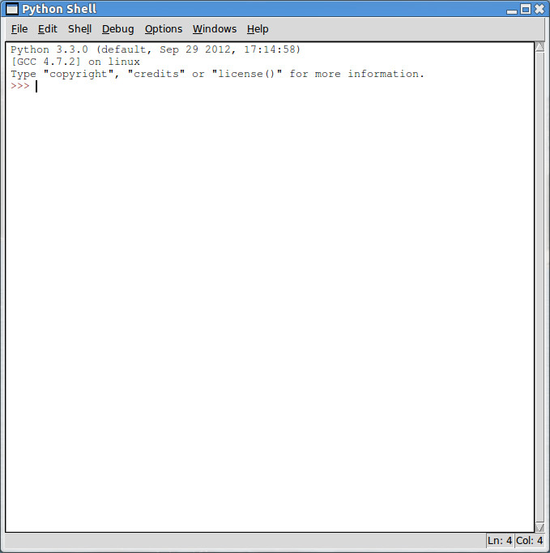

Departamento de Ciência da
Computação - IME - USP
Instalação do Python no Ubuntu Linux
A implementação da
linguagem Python é
licenciada como open
source license.
Isto significa, entre outras coisas, que
ela pode ser distribuída e copiada à vontade.
Existem implementações de Python para vários tipos de
computadores. Aqui está descrita uma instalação para Ubuntu Linux.
Instruções para a Instalação
Nas distribuições Linux o Python aparece como aplicações prontas a
serem instaladas.
-
Acesse a Central de programas do Ubuntu.
- Na janela de busca, digite idle.
- Clique no retângulo do programa IDLE correspondente à
versão mais recente do Python. No nosso exemplo, a versão mais
recente é Python 3.3. Portanto, clicamos em
IDLE (usando Python 3.3).
Em seguida, clicamos a opção Instalar
- Após um certo tempo, os programas serão instalados. Abra o
programa IDLE. Será essa a interface do Python que usaremos
na disciplina.

-
Divirtam-se!